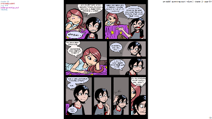
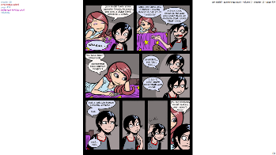
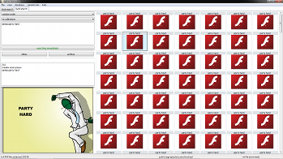
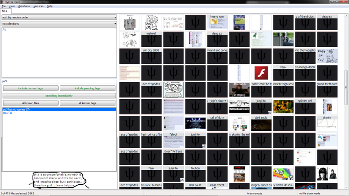
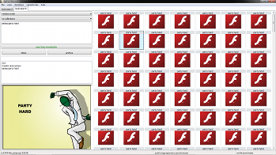
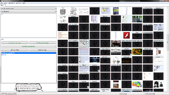

 



Although I've tried to make hydrus's interface simple, its underlying concepts are not. Please read the introduction and skim the getting started guide at the least, and if you want to get started with my server, you'll probably want to check out the access keys section.